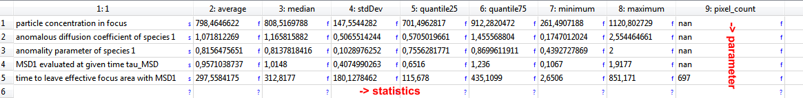
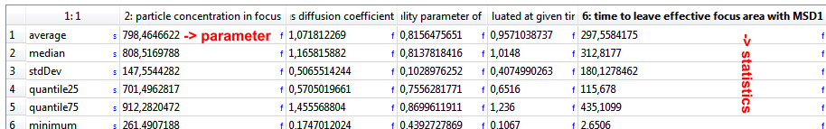
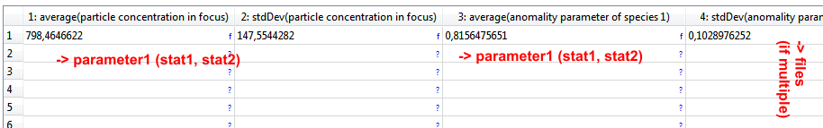

$$qf_commondoc_header.start$$ $$qf_commondoc_header.end$$
Imaging FCS Plugin: Copy Fit results statistics
This function summarizes the statistics of the selected parameters as a table to the QF table plugin, to Excel, Origin or any other external spreadsheet program.
For that is calculates the statistics (average, median, standard deviation etc.) over the fit results from all (or a selected subset, see below) the pixels in the image.
It is also possible to select the "count rate, ch.0/1", which will use the overview image pixel values.
Depending on the selection, the output will have different forms
- one column per parameter: 
- one row per parameter: 
- all parameters in one row: 
- all parameters in one column: as above, but rotated 90°
$$note:If you want to create a table from the statistics of several RDRs, the best option is in many cases all parameters in one row, since then each RDR is one line in the table and the columns are the parameter(sstatistic)s. If you want to get a table from the current RDR only, one of the first two options is best suited!$$
The range of pixels, over which the statistics is created, can be selected by the user:
- all non-masked pixels
- selected pixels: the currently selected pixels are applied to ALL files
- pixels from named selections: here you can give a list of named selections, over which the statistics should be calculated. If multiple RDRs are selected, the selections in this list are searched (by name) in all these RDRs.
In the widget add RDR property values you can specify a list of RDR properties (separated by ; or ,), which should be added to the output table. Since these represent only one value per RDR, no statistics is calculated!